Begegnung
Andere Männer wirklich kennenlernen – und beobachten, was diese Begegnung in dir auslöst.
Vier Tage Men's Work, Körperarbeit, Natur und ehrliche Begegnung – in einer kleinen Gruppe von Männern, die bereit sind, wirklich hinzuschauen.
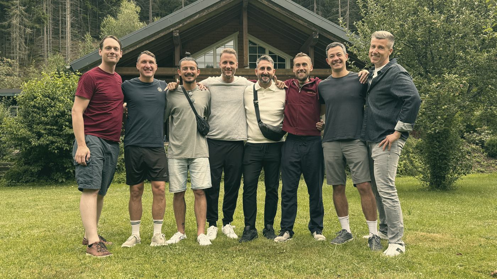
Verantwortung übernehmen. Probleme lösen. Weitermachen.
Viele Männer sind gut darin, zu funktionieren – und gleichzeitig erstaunlich allein mit dem, was wirklich in ihnen passiert.
Wir haben Freunde. Kollegen. Partnerinnen. Familien.
Und trotzdem gibt es wenige Räume, in denen wir anderen Männern wirklich begegnen.
Ohne Rolle.Ohne etwas beweisen zu müssen.Ohne bereits eine Antwort haben zu müssen.
Leading Legends schafft diesen Raum.
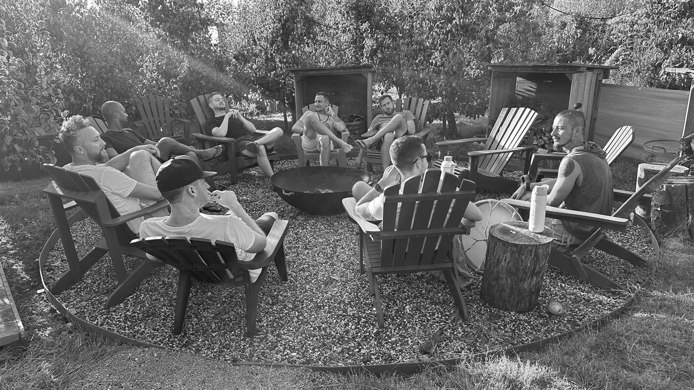
Andere Männer können uns etwas zeigen, das wir alleine nur schwer erkennen.
Der eine beeindruckt dich.
Mit dem anderen vergleichst du dich.
Einer fordert dich heraus.
Bei einem ziehst du dich zurück.
Einem möchtest du etwas beweisen.
Einem vertraust du.
Bei einem kannst du weich werden.
Und plötzlich erkennst du etwas über dich selbst.
In der Begegnung mit anderen Männern werden unsere Muster sichtbar. Wie wir Nähe zulassen. Wie wir Grenzen setzen. Wie wir mit Stärke, Verletzlichkeit, Anerkennung, Konkurrenz und Unsicherheit umgehen. Genau dort beginnt für uns Men's Work.
Leading Legends will dir nicht beibringen, männlicher, stärker oder erfolgreicher zu werden.
Uns interessiert etwas anderes:
Was passiert, wenn du dir selbst und anderen Männern ehrlich begegnest?
Wenn du nicht sofort erklären, lösen oder verändern musst, was auftaucht?
Wenn Stärke und Verletzlichkeit nebeneinander existieren dürfen?
Wir sagen dir nicht, welcher Mann du sein solltest.Wir schaffen einen Raum, in dem du herausfinden kannst, welcher Mann du bist.
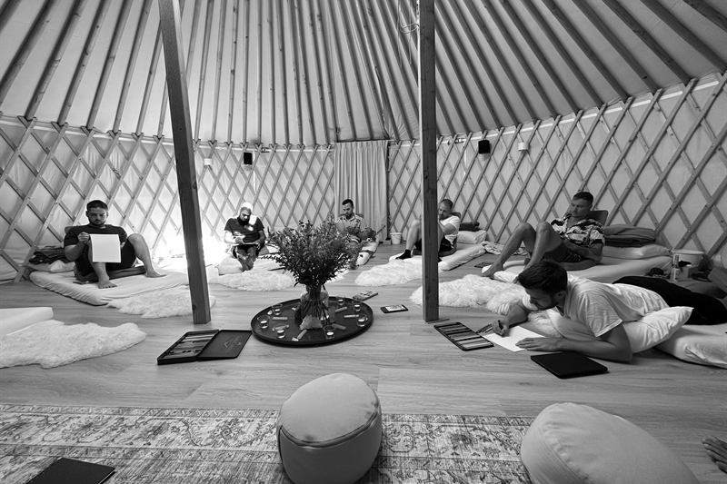
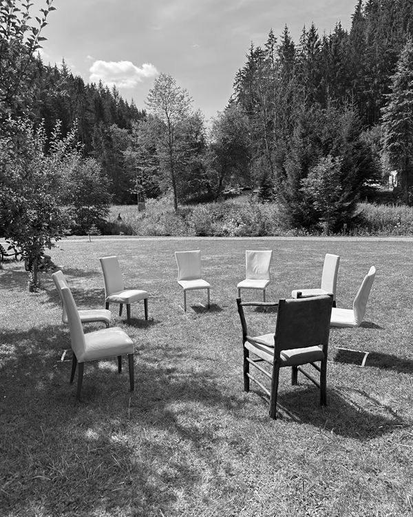
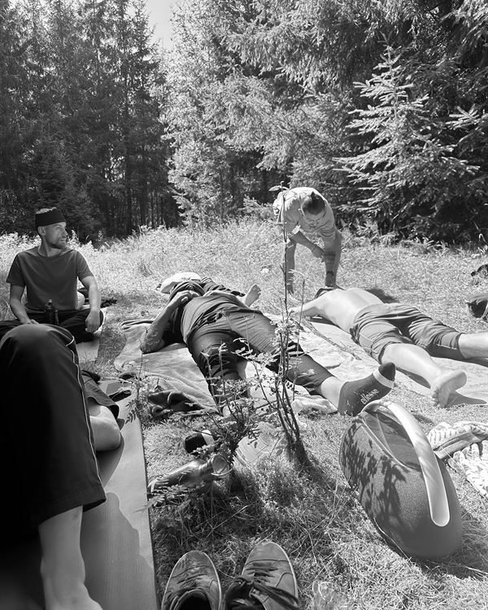
Manche Dinge lassen sich nicht durch noch mehr Nachdenken verändern. Deshalb verbindet Leading Legends unterschiedliche Formen der Erfahrung – mit dir selbst, deinem Körper, der Natur und den Männern um dich herum.
Andere Männer wirklich kennenlernen – und beobachten, was diese Begegnung in dir auslöst.
Raus aus dem reinen Denken. Aufmerksamkeit dorthin bringen, wo Worte alleine nicht hinkommen.
[Beschreibungssatz folgt]
Nicht jede Begegnung muss angenehm sein. Vergleich, Widerstand, Grenzen und Unterschiedlichkeit können genauso viel zeigen wie Verbindung.
Nicht jede wichtige Erfahrung braucht eine Übung. Gemeinsam essen. Draußen sein. Sauna. Lachen. Schweigen. Gespräche führen. Einfach Zeit miteinander verbringen.
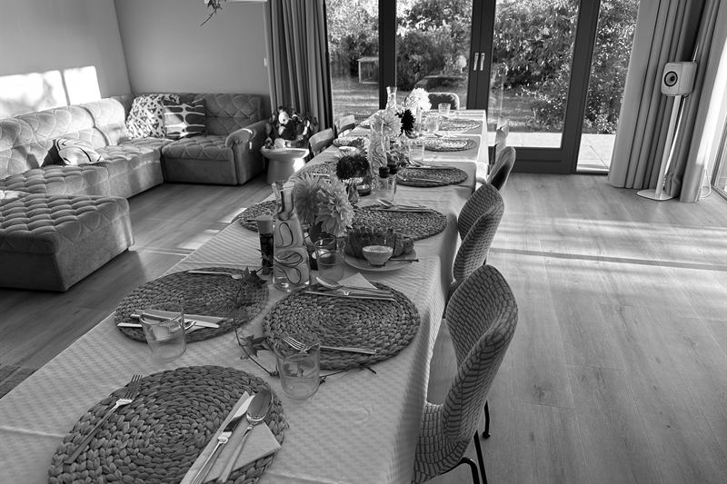
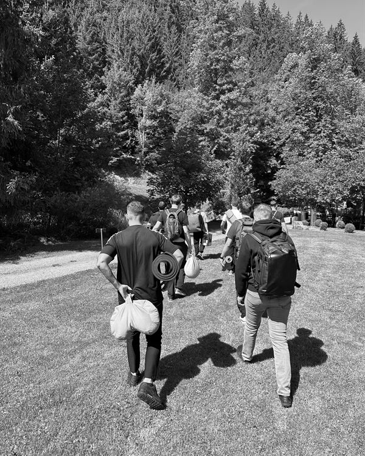
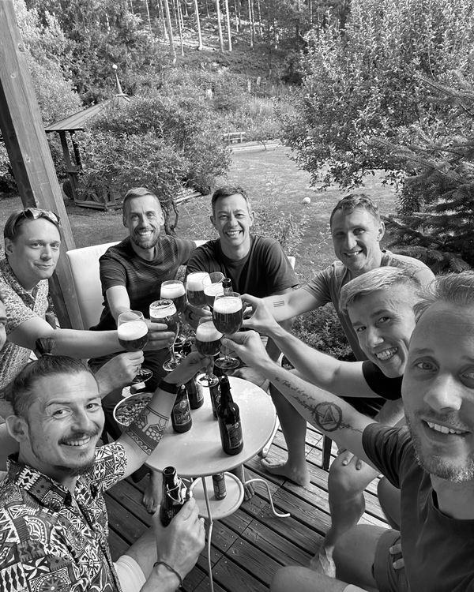
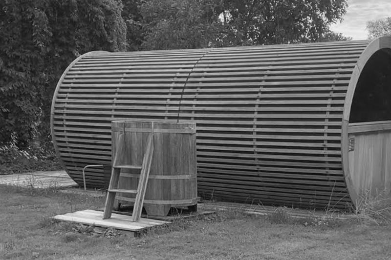
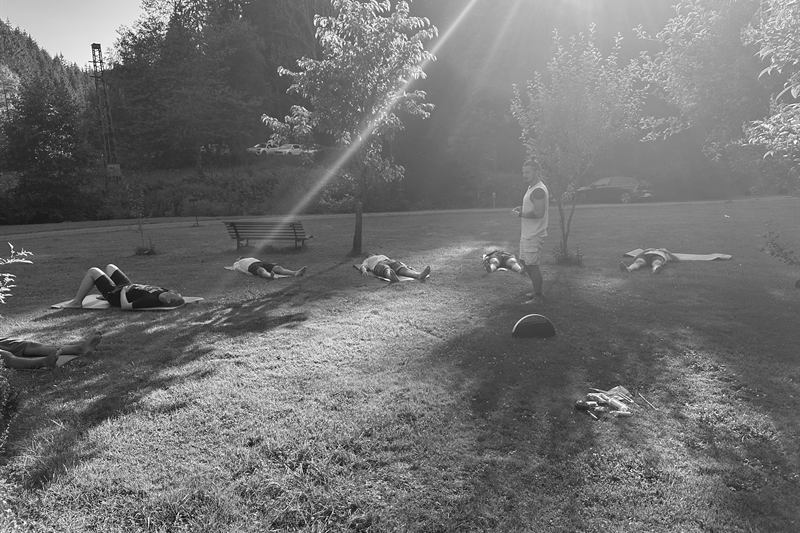
Vier Tage, an denen du nirgendwo anders sein musst.
Alltag hinter dir lassen. Die anderen Männer kennenlernen. Im Körper ankommen. Eine eigene Intention setzen.
In Kontakt kommen. Mit dir. Mit deinem Körper. Mit anderen Männern. Mit dem, was normalerweise wenig Raum bekommt. Natur. Männerarbeit.
Muster erkennen. Grenzen erfahren. Ehrlich werden. Neue Perspektiven zulassen. Gemeinsam durch intensive und leichte Momente gehen. Erkenntnisse nicht nur verstehen, sondern erleben und einordnen.
Verstehen, was diese Tage dir gezeigt haben. Gemeinsam abschließen. Und mitnehmen, was für dein Leben wirklich relevant ist.
Ein klarerer Blick darauf, was dich bewegt, wo du stehst und was dir wirklich wichtig ist.
Mehr Zugang zu dem, was du fühlst, brauchst und eigentlich willst.
Die Erfahrung, nicht alles ausschließlich über den Kopf lösen zu müssen.
Ein besseres Verständnis dafür, wie du Nähe, Grenzen, Konflikt und Verbindung gestaltest.
Die Erfahrung, dass Offenheit und Tiefe unter Männern möglich sind – ohne Stärke aufgeben zu müssen.
Ein paar Tage Abstand vom eigenen Alltag – und damit die Möglichkeit, das eigene Leben von außen zu betrachten.
Was davon bleibt, entscheidet sich nicht im Retreat. Sondern darin, wie du danach lebst.
Fabian
[Ein Satz aus dem Video]
Josef
[Ein Satz aus dem Video]
Marco
[Ein Satz aus dem Video]
Matthias
[Ein Satz aus dem Video]
Leading Legends ist aus unserer eigenen Erfahrung mit Männerarbeit, persönlicher Entwicklung und der Frage entstanden, was passiert, wenn Männer sich wirklich begegnen.
Unsere Aufgabe ist nicht, Antworten für dich zu haben. Unsere Aufgabe ist es, einen Rahmen zu schaffen, in dem ehrliche Erfahrung möglich wird.
[Bio später entwickeln]
[Bio später entwickeln]
„Wir verstehen unsere Aufgabe nicht darin, dir zu sagen, wie du als Mann sein solltest. Wir schaffen einen Rahmen, in dem du selbst herausfinden kannst, was für dich wahr ist.“
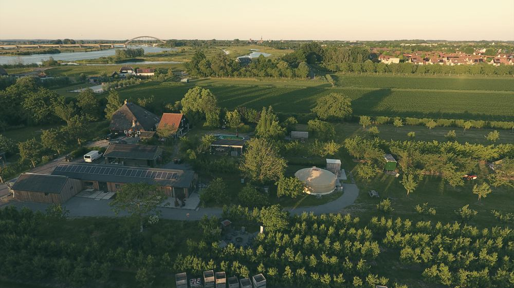
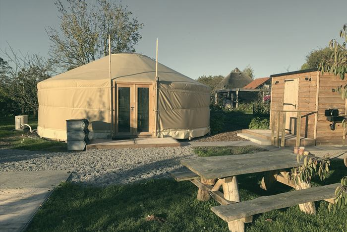
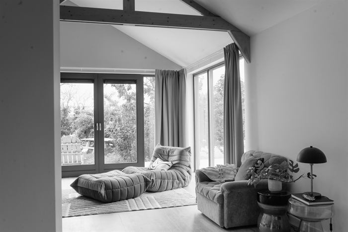
Aber die Bereitschaft, dich einzulassen.
Nein. [Text finalisieren]
[Text]
[Text]
[Text sorgfältig formulieren]
[NOCH ZU DEFINIEREN]
[NOCH ZU DEFINIEREN]
[NOCH ZU DEFINIEREN]
[Text]
Nein. Leading Legends ist ein Men's Work Retreat und kein Ersatz für Psychotherapie oder medizinische Behandlung.
[NOCH ZU DEFINIEREN]
Leading Legends
Vier Tage.Unter Männern.
Nächstes Retreat · [Datum] · [Ort]